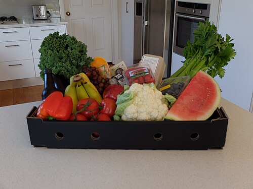

Draft only · noindex,nofollow · PL-first / complete EN
Kiszonki a jelita: kiedy pomagają, a kiedy nasilają objawy
Kiszonki a jelita: kiedy pomagają, a kiedy nasilają objawy wymaga praktycznego podejścia: konkretnego, bezpiecznego i możliwego do utrzymania. Ten draft pokazuje, jak zacząć od jedzenia w realnym tygodniu, jakie sygnały obserwować i kiedy temat wymaga konsultacji zamiast kolejnej porady z internetu.

Najważniejsze wnioski
- kiszonki jelita: zacznij od jednej zmiany, którą da się powtórzyć przez tydzień.
- Najważniejsze dźwignie w tym temacie to porcja, tempo jedzenia, FODMAP, błonnik, płyny, stres i diagnostyka objawów alarmowych.
- Nie wprowadzaj dużych eliminacji bez powodu, planu powrotu i oceny ryzyka.
- Objawy alarmowe i choroby przewlekłe wymagają konsultacji, nie tylko artykułu.
Dla kogo jest ten draft: kiszonki jelita
Kiszonki a jelita: kiedy pomagają, a kiedy nasilają objawy jest dla osoby, która chce przełożyć popularny temat na bezpieczne decyzje przy stole. Nie jest to plan leczenia ani jadłospis kliniczny. To rama do rozmowy o jelit, tolerancji produktów i objawów trawiennych: co warto sprawdzić samodzielnie, co obserwować i gdzie kończy się rola artykułu.
Mechanizm w praktyce
W tym temacie najważniejsze są: porcja, tempo jedzenia, FODMAP, błonnik, płyny, stres i diagnostyka objawów alarmowych. Zamiast szukać jednego winnego produktu, lepiej zobaczyć cały dzień: porę posiłku, wielkość porcji, białko, błonnik, napoje, sen i poziom stresu. Dla hasła „kiszonki jelita” najpierw obserwuj jeden wskaźnik: objawy, energię, tolerancję posiłku albo wynik badania, zamiast zmieniać wszystko naraz.
Plan na pierwsze 7 dni
Przez tydzień wybierz jedną zmianę związaną z hasłem „kiszonki jelita”: ustal stałą porę jednego posiłku, dodaj do niego źródło białka, zapisz objawy lub energię po jedzeniu i nie wprowadzaj kilku eliminacji naraz. Po 7 dniach oceń, czy zmiana była realna, a nie tylko ambitna.
Przykłady posiłków do dopasowania
Możesz zacząć od takich baz: ryż lub ziemniaki z łagodnym źródłem białka; owsianka w porcji dopasowanej do tolerancji; gotowane warzywa testowane pojedynczo, nie wszystkie naraz. Każdy przykład wymaga dopasowania porcji, tolerancji, leków i celu. W praktyce lepsze są 2-3 powtarzalne posiłki niż długa lista potraw, których nie ugotujesz. Przy celu „kiszonki jelita” wybierz wariant najbliższy Twojej kuchni i dopiero potem zmieniaj porcję, dodatek białka lub źródło błonnika.
Co monitorować
Przy temacie kiszonki jelita obserwuj: ból, wzdęcia, rytm wypróżnień, krew w stolcu, utratę masy i reakcję na konkretne porcje. Dobrze działa prosty dzienniczek: godzina posiłku, skład, objawy po 2-4 godzinach, sen i stres. Nie chodzi o kontrolę perfekcyjną, tylko o znalezienie wzoru.
Czego unikać
Unikaj obietnic typu „wyleczy”, „zresetuje hormony”, „spali tłuszcz” albo „zastąpi leki”. Ostrożnie podchodź też do list zakazów kopiowanych z internetu. Jeśli ograniczenie dotyczy całej grupy produktów, powinno mieć powód, plan powrotu albo opiekę specjalisty. W kontekście „kiszonki jelita” szczególnie odrzucaj rady, które pomijają leki, wyniki badań albo realny rytm dnia.
Czerwone flagi
Skontaktuj się z lekarzem, jeśli pojawiają się: krew w stolcu, nocne biegunki, gorączka, anemia, nagła zmiana rytmu wypróżnień, silny ból lub utrata masy ciała. Dietetyk może pomóc ułożyć jedzenie, ale nie powinien zastępować diagnostyki ani leczenia, gdy objawy są silne lub nowe. Przy temacie „kiszonki jelita” próg konsultacji powinien być niższy, jeśli objawy są nowe, nasilają się albo dotyczą ciąży, leków lub choroby przewlekłej.
Jak Natalia może dopracować ten temat w konsultacji
W konsultacji ten draft można zamienić w indywidualny plan: przejrzeć wyniki badań, leki, rytm pracy, kuchnię domową, budżet i preferencje. Dopiero wtedy temat kiszonki jelita staje się konkretną strategią, a nie kolejną ogólną poradą.
FAQ
Czy kiszonki jelita wymaga idealnej diety?
Nie. W praktyce lepiej zacząć od regularności, białka, błonnika i obserwacji reakcji niż od idealnego jadłospisu. Perfekcja często skraca trwałość planu.
Po jakim czasie ocenić zmianę przy temacie kiszonki jelita?
Najczęściej po 7-14 dniach jednej konkretnej zmiany. Jeśli objawy są silne, nowe albo dotyczą choroby przewlekłej, nie czekaj z konsultacją.
Czy przy kiszonki jelita potrzebne są suplementy?
Tylko gdy wynikają z niedoboru, zaleceń albo jasno określonego celu. Suplement nie powinien zastępować podstaw: posiłków, snu, diagnostyki i leczenia.
Kiedy zgłosić się do specjalisty?
Gdy pojawiają się czerwone flagi, wyniki badań są nieprawidłowe, przyjmujesz leki, jesteś w ciąży albo jedzenie zaczyna powodować lęk i coraz większe ograniczenia.
Nota bezpieczeństwa
Ten artykuł ma charakter edukacyjny. Nie zastępuje diagnozy, leczenia, psychoterapii ani indywidualnej konsultacji medycznej lub dietetycznej. Nie odstawiaj leków i nie zmieniaj zaleceń lekarskich na podstawie tekstu.
Fermented foods and the gut: when they help and when they worsen symptoms
Fermented foods and the gut: when they help and when they worsen symptoms needs a practical, safe and sustainable approach. This draft explains how to begin with food in a real week, which signals to monitor and when the topic needs professional support rather than another internet rule.
Key takeaways
- For fermented foods and the gut, start with one change you can repeat for a week.
- The key levers here are portion size, eating pace, FODMAPs, fibre, fluids, stress and diagnosis of alarm symptoms.
- Do not start major eliminations without a reason, reintroduction plan and risk check.
- Alarm symptoms and chronic conditions need consultation, not only an article.
Who this draft is for: fermented foods and the gut
Fermented foods and the gut: when they help and when they worsen symptoms is for someone who wants to turn a popular nutrition topic into safe food decisions. It is not a treatment plan or a clinical meal plan. It gives a framework for gut health, food tolerance and digestive symptoms: what can be tested, what to monitor and where article-level advice ends.
The practical mechanism
For this topic, the main levers are portion size, eating pace, FODMAPs, fibre, fluids, stress and diagnosis of alarm symptoms. Instead of blaming one food, look at the whole day: meal timing, portion size, protein, fibre, drinks, sleep and stress level. For “kiszonki jelita”, start by tracking one signal: symptoms, energy, meal tolerance or a relevant test result, not everything at once.
The first 7-day plan
For one week, choose one change related to “fermented foods and the gut”: stabilise one meal time, add a protein source, note symptoms or energy after eating and avoid several eliminations at once. After seven days, review whether the change was realistic, not merely ambitious.
Meal examples to adapt
Useful starting points include: rice or potatoes with a gentle protein source; porridge in a tolerance-matched portion; cooked vegetables tested one by one rather than all at once. Each example still needs portion, tolerance, medication and goal adjustment. In real life, two or three repeatable meals are often more useful than a long list of meals you will not cook. For Fermented foods and the gut: when they help and when they worsen symptoms, choose the option closest to the reader's kitchen before adjusting portions, protein or fibre.
What to monitor
For fermented foods and the gut, monitor pain, bloating, bowel rhythm, blood in stool, weight loss and reactions to specific portions. A simple diary works well: meal time, meal composition, symptoms two to four hours later, sleep and stress. The goal is not perfect control, but finding a pattern.
What to avoid
Avoid claims such as “cures”, “resets hormones”, “burns fat” or “replaces medication”. Be careful with internet ban lists. If an approach removes a whole food group, it should have a reason, a reintroduction plan or professional supervision. For “kiszonki jelita”, be especially careful with advice that ignores medication, test results or the reader's real schedule.
Red flags
Contact a doctor if you notice blood in stool, night diarrhoea, fever, anaemia, sudden bowel changes, severe pain or weight loss. A dietitian can help organise food, but should not replace diagnosis or treatment when symptoms are strong or new. For “kiszonki jelita”, the threshold for professional support is lower when symptoms are new, worsening or linked with pregnancy, medication or chronic disease.
How Natalia could personalise this
In consultation, this draft can become an individual plan by reviewing tests, medication, work rhythm, home cooking, budget and preferences. Only then does fermented foods and the gut become a concrete strategy rather than another general tip.
FAQ
Does fermented foods and the gut require a perfect diet?
No. It is usually better to begin with meal rhythm, protein, fibre and response tracking than with a perfect meal plan. Perfection often makes a plan less sustainable.
How soon can I review a change for fermented foods and the gut?
Usually after 7-14 days of one specific change. If symptoms are strong, new or linked to a chronic condition, do not delay professional support.
Are supplements needed for fermented foods and the gut?
Only when they match a deficiency, a recommendation or a clearly defined goal. A supplement should not replace meals, sleep, diagnosis or treatment.
When should I seek professional support?
Seek support with red flags, abnormal tests, medication use, pregnancy or when food starts creating fear and increasing restriction.
Safety note
This article is educational. It does not replace diagnosis, treatment, psychotherapy or an individual medical or nutrition consultation. Do not stop medication or change medical advice based on this text.
Źródła / Sources
- NCEZ: Dieta low FODMAP - zasady i zastosowanie — NCEZ / NIZP PZH-PIB
- NCEZ: IBS i dieta low FODMAP — NCEZ / NIZP PZH-PIB
- NICE CG61: Irritable bowel syndrome in adults — NICE
- NCEZ: Talerz Zdrowego Żywienia — NCEZ / NIZP PZH-PIB
- WHO: Healthy diet — World Health Organization
- PubMed search: kiszonki jelita — PubMed
Linki wewnętrzne / Internal links
- Talerz Zdrowego Żywienia: praktyczna baza bez diety idealnej / The healthy plate: a practical base without a perfect diet
- Białko w diecie: ile potrzebujesz i jak je rozłożyć / Protein in the diet: how much you need and how to spread it
- Odchudzanie bez efektu jojo / Weight loss without the yo-yo effect